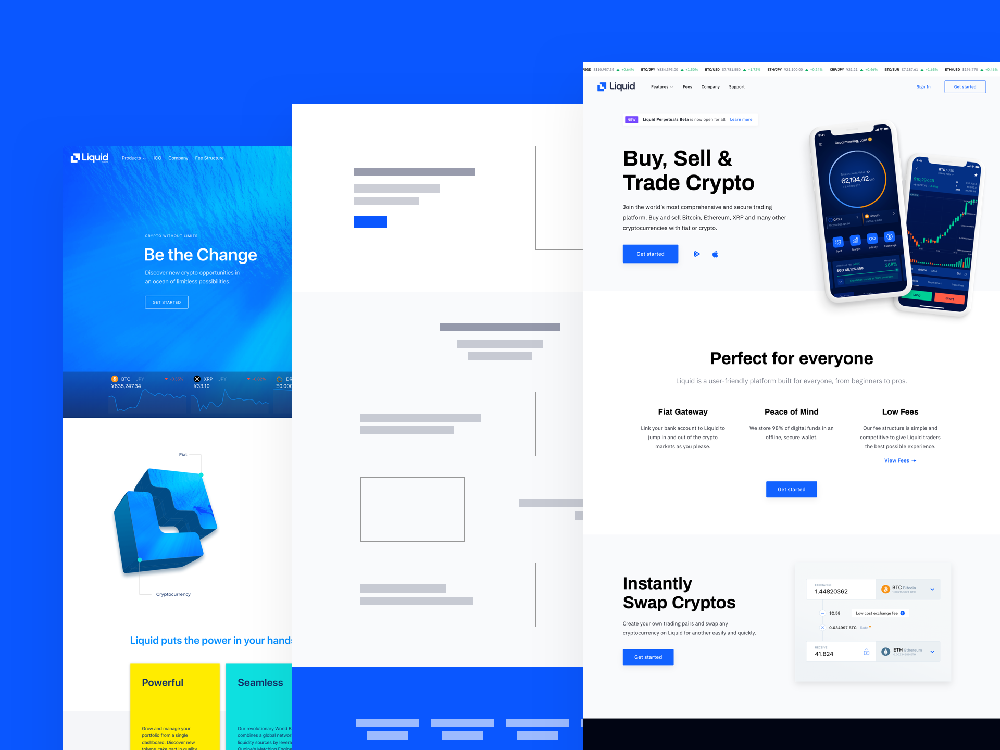
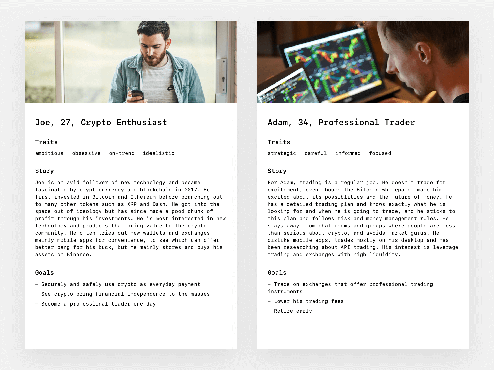
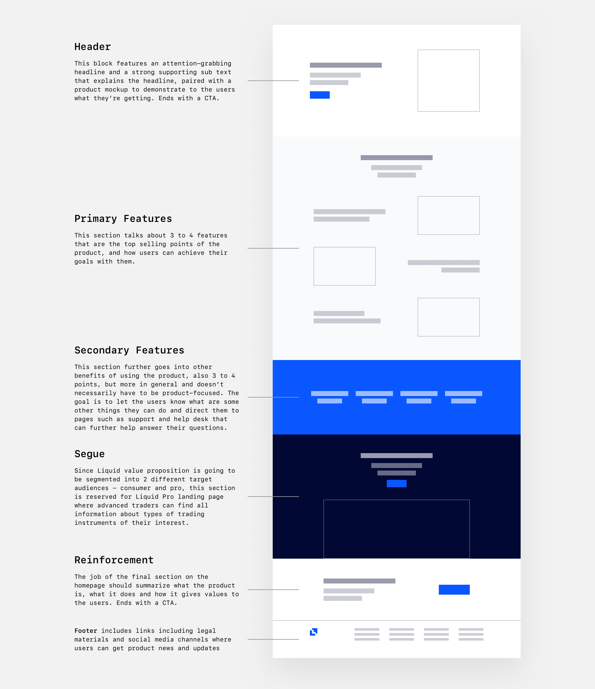
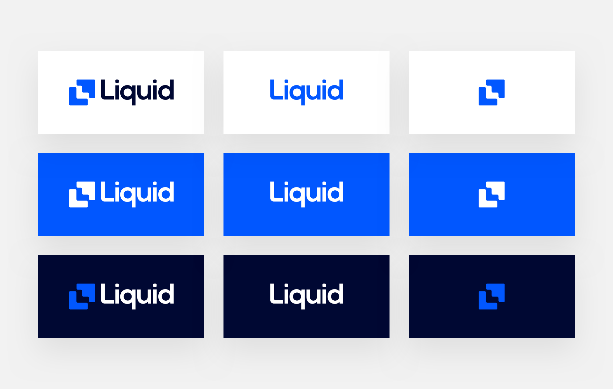
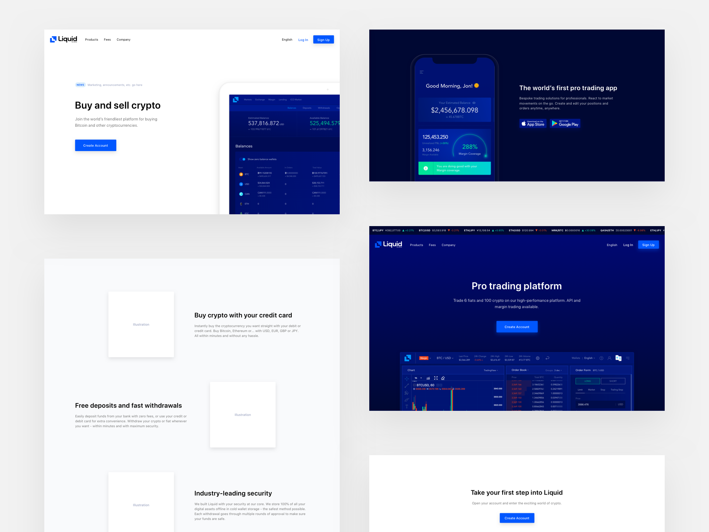
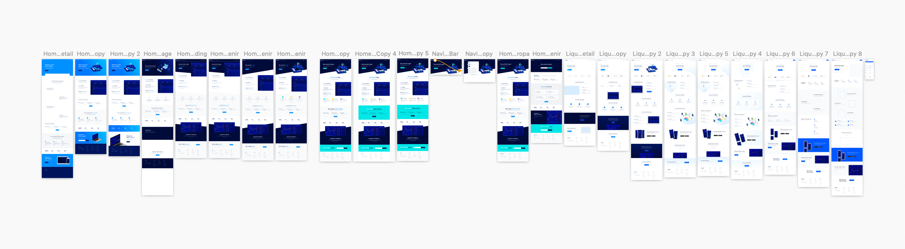
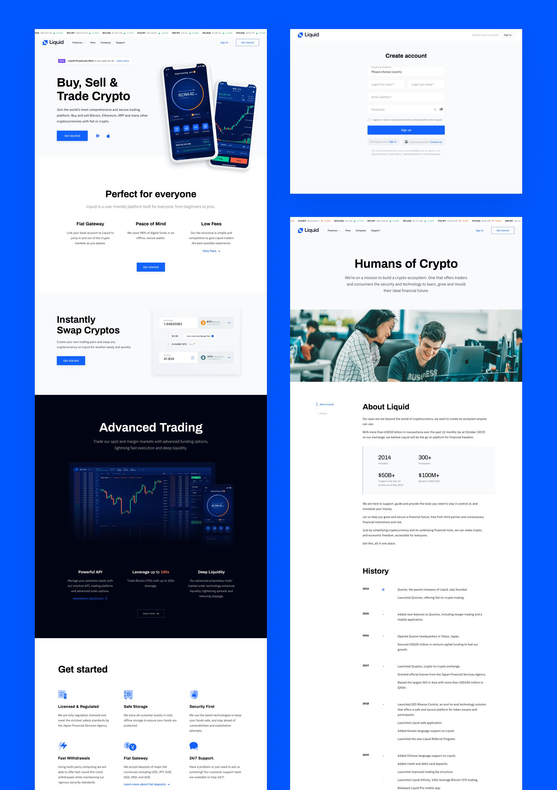

Liquid is a regulated crypto-fiat exchange that offer core products catered to professional traders. After launching retail features such as Quick Exchange and credit card funding to make it easier and more user-friendly for customers that wants to invest in digital assets, we knew we had to make an update to communicate better with potential investors at the very first touch point.
I helped lead the redesign of Liquid's website by laying out foundations including information architecture, content strategy, and an updated visual direction for Liquid that our customers could resonate with.

Introduction
Liquid was the result of the merging of our former exchanges Qryptos and Quoinex, which gained traction globally in the crypto space. However, we noticed a lack of engagement and conversions despite running promotional local events and numerous ad campaigns dedicated to the global launch.
We had two simple questions: What is not working? How might we talk to users and potential investors in a way that resonates with them?
Upon conducting internal reviews guided by Jackob Nielsen's usability heuristics as well as getting input from surveys sent out to visitors that didn't convert, the two main problems we found were:
The homepage doesn't talk about actual trading and how Liquid would benefit them as customers. We were talking about us, we didn’t make it about our users.
The overall website content is verbose and has a lot of jargon and ambiguity, making it uneasy to scan and lacking clarity.
Old homepage design from the agency we hired to do our initial branding.
Several frequent traders also added that they couldn't resonate with the diver theme across our marketing site, promotional video, and illustrations. While our intention was about "Let's dive into an ocean of possibilites with crypto!", to our traders unfortunately the diver imagery was associated with markets dipping... 🤐
It was apparent that we rushed to launch our site and so we overlooked the content strategy and the visual language—important factors that affected the overall experience of the site and how our brand is perceived by customers.
After gathering our insights and research, it was time to envision our messaging and brand more concretely.
Working closely with the Chief Design Officer, I conducted a competitor research, made a content inventory, and constructed user personas also in direct collaboration with the product marketing manager and a product specialist for their help with pulling analytics and product proposition.

User personas I wrote collaborating with Jacob Siyufy and Nhi Nguyen.The old sitemap had separate pages for each trading product that did not serve their purposes well according to our analytics. Instead of information being scattered, the new sitemap includes these products in the dedicated Liquid Pro page.

Content strategy for the new homepage copy focusing on product showcase so users can experience the product beforehand, while highlighting user benefits.
Besides information architecture and UX writing for most of the web copy, art direction was also my main contribution.
Having a visual background in photography and filmmaking, art direction has increasingly been a passion of mine and also something that seems to be often overlooked in product design. My pursuit was, how would we make this financial product striking, beautiful, and memorable? A good product should have both usability and aesthetic, and having an aesthetic that can resonate with the people and the culture you're designing for makes a huge impact in user experience.
Speaking of emotions, Don Norman's Three Levels of Design proposes three different—yet interconnected— levels that create emotions and bring up certain feelings in interfaces:
Behavioral: general understanding of a product and clarity creates positive feelings. Liquid isn't reinventing the wheel in the crypto trading platform space, our goal is to make things easiers and more accessible for our users.
Visceral: the visual language that appeals to a certain user group. Male traders and investors comprise 95% of the crypto space, therefore we keep in mind to use a formal, bold, minimal and professional visual design that match the Liquid's products as well as the industry's masculine characteristics.
Reflective: the final layer that connects everything together—how they embody the product which then impacts our users' everyday life and also the emotions that are associated with it.

Refreshed Liquid logos ("by Quoine" is dropped to avoid confusion since we're steering away from our parent company name) featuring a new electric blue and a monochromatic color scheme for both our marketing site and our app products.

Snippets of high-fidelity wireframes that I worked on to visualize the art direction. We went with a minimalistic color scheme and a clean hierarchy of typography that convey professionalism, simplicity, and next-gen technology because we're a digital financial product.

I went through dozens of design interations and explorations before we got to where we intended.
Liquid 2.0—Buy, sell and trade crypto. Everything you need to stay in control of your money. All in one place.
My colleagues took over this redesign project and crafted the final visual design after my departure from Liquid. The majority of my research and output made it to the official implementation, such as visual direction and content strategy.
In February 2020, 6 months after I last worked on the project, Liquid finally launched the new marketing site featuring the homepage as the storefront showcasing a user-friendly platform built for everyone, from beginners to pros.
We also launched a Pro page with a dark, premium look and feel, directing advanced crypto traders, professional and institutions to access core trading products that make Liquid the platform for maximum control over every trade.

Liquid redesigned marketing site: Homepage, Sign Up page, and Company page.New dedicated Pro page for advanced and professional traders.
Closure and takeaway
Being a key member of this project was an amazing opportunity to learn not only about my own process but also my team and organization, even though I did not get to finish it. I learned a great amount of knowledge by practicing a ton and making mistakes, such as going straight to designing high-fidelity mockups without doing any wireframes or considering making prototypes to understand the whole picture of what we were building, and also redesigning something just for the sake of it—doing the “how” without knowing the “why.”
Shoutouts to Jon Myers
and Sandra Vu for being my mentors throughout the process,
Ryan Nguyen for reminding me to incorporate data in my design decisions, and the Liquid design team —
Valentin Cheval,
Duong Le, and
Nhan Tran
for picking up where my work left off and driving this home.